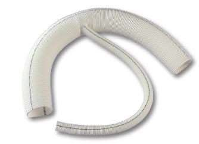
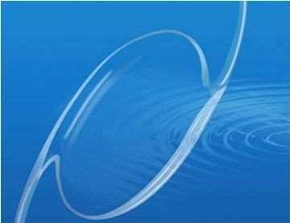

Historique des biomatériaux
Remplacer une dent, une hanche ou un cristallin n'est pas une idée récente. Mais pendant des siècles on l'a fait avec ce qu'on avait sous la main, sans savoir comment le corps allait réagir. Comment est-on passé du plâtre au titane ?
Le chapitre en bref
Le chapitre 1 a posé les définitions. Celui-ci répond à quatre questions d'ingénieur :
- Historique (cette page) : d'où viennent les biomatériaux d'aujourd'hui.
- Exigences : ce qu'on demande à un biomatériau, et à quoi on reconnaît qu'un matériau en est un.
- Choisir et valider : les outils de choix, le cahier des charges, le chemin jusqu'au patient.
- Domaines d'application : où, dans le corps, on trouve des biomatériaux.
Intuition
L'histoire avance par emprunts. Les matériaux qui entrent en médecine ont presque toujours été mis au point ailleurs : dans la chimie, la métallurgie, le nucléaire, l'aéronautique. Le chirurgien les essaie, garde ceux que le corps tolère, et rejette les autres. À chaque étape, on comprend un peu mieux la réponse du corps, et on devient plus exigeant.
Formalisation
| Époque | Ce qui se passe |
|---|---|
| Les Égyptiens | remplacer l'ensemble ou une partie d'organes défaillants par des substituts : fer, cuivre, plomb, bois, plâtre |
| Jusqu'au milieu du XXe siècle | l'or, l'argent et le cuivre pour la chirurgie dentaire et orthopédique |
| Pendant la guerre | le polyméthacrylate de méthyle (PMMA) des cockpits d'avions anglais donne les lentilles intraoculaires |
| Années 50 | l'acier inoxydable, premier matériau utilisé avec succès dans la conception de prothèses de hanche |
| Après les années 50 | les polyesters comme prothèses vasculaires |
| Fin des années 60 | le titane, découvert en médecine par Brånemark et coll. (1969), déjà utilisé dans l'aéronautique pour sa combinaison faible densité / résistance mécanique |
| Années 70 | études de toxicité des plastiques et des métaux ; les grands gagnants sont les alliages à base de titane ; problème : ces matériaux ne s'intégraient pas parfaitement au corps humain |
Deux moteurs expliquent cette accélération au XXe siècle : la recherche dans les industries chimiques, métallurgiques, nucléaires et aéronautiques, qui fournit les matériaux ; et les progrès de la chirurgie reconstructive, orthopédique et vasculaire, qui réclament des matériaux pour l'implantation.


Bio-inerte ou bioactif
Le problème des années 70 (des implants qui ne s'intègrent pas parfaitement) conduit à distinguer deux rôles. Un biomatériau bio-inerte a pour rôle principal de remplacer une ou plusieurs fonctions d'un organe, par exemple les valves du cœur. Un biomatériau bioactif est capable d'avoir une interaction forte avec l'environnement où il est implanté : par exemple, le revêtement d'une prothèse de hanche par une couche d'hydroxyapatite (la partie minérale de l'os) améliore la biocompatibilité et l'intégration de l'implant dans le site osseux.
Un biomatériau peut aussi servir en dentaire, en chirurgie maxillo-faciale ou chirurgicale, et pour délivrer des médicaments, grâce à des outils introduits dans le corps qui libèrent des substances de manière rapide (libération contrôlée) ou prolongée.
Rappel : l'hydroxyapatite est une espèce minérale de la famille des phosphates, de formule \(\mathrm{Ca_5(PO_4)_3(OH)}\), usuellement écrite \(\mathrm{Ca_{10}(PO_4)_6(OH)_2}\) pour souligner que la maille de la structure cristalline comprend deux motifs. C'est le membre hydroxylé du groupe apatite.
Exemple
Exemple ajouté. Une prothèse de hanche posée en 1955 était sans doute en acier inoxydable : c'est le premier matériau utilisé avec succès pour la hanche, dans les années 50. Une tige posée dans les années 80 a plus de chances d'être en alliage de titane, grand gagnant des études de toxicité des années 70. Et si sa surface est recouverte d'hydroxyapatite, elle est bioactive : l'os vient s'y lier.
Dans \(\mathrm{Ca_{10}(PO_4)_6(OH)_2}\), il y a deux motifs \(\mathrm{Ca_5(PO_4)_3(OH)}\) : \(2 \times 5 = 10\) atomes de calcium et \(2 \times 3 = 6\) groupes phosphate.
Formules clés
Égyptiens : fer, cuivre, plomb, bois, plâtre. Jusqu'au milieu du XXe siècle : or, argent, cuivre. Guerre : PMMA des cockpits, puis lentilles intraoculaires.
Années 50 : inox pour la hanche, puis polyesters vasculaires. 1969 : titane (Brånemark), venu de l'aéronautique. Années 70 : études de toxicité, victoire des alliages de titane.
Bio-inerte : remplace une fonction (valve). Bioactif : interagit fortement avec le tissu (revêtement d'hydroxyapatite).
\[\mathrm{Ca_{10}(PO_4)_6(OH)_2} = 2 \times \mathrm{Ca_5(PO_4)_3(OH)}\]